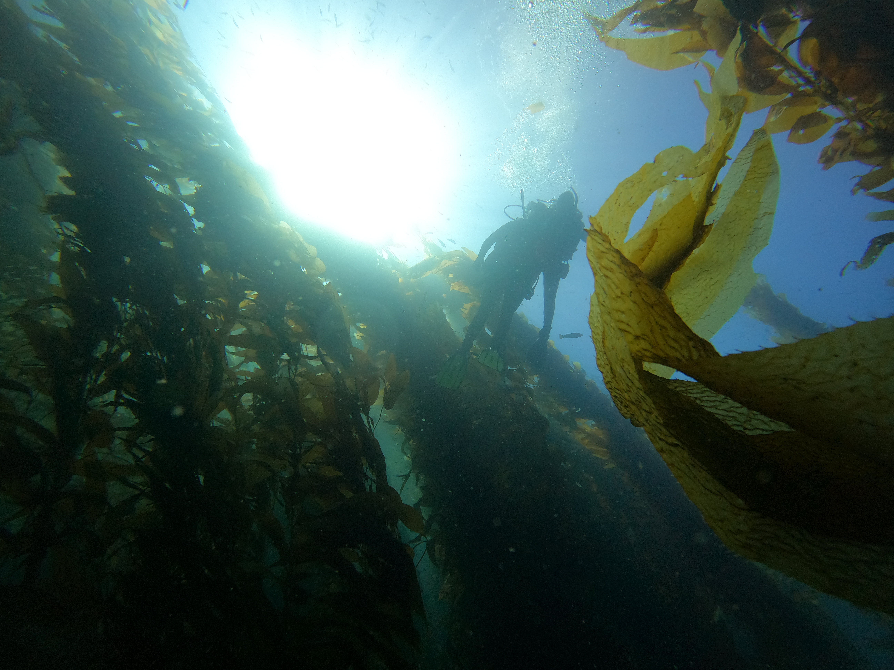
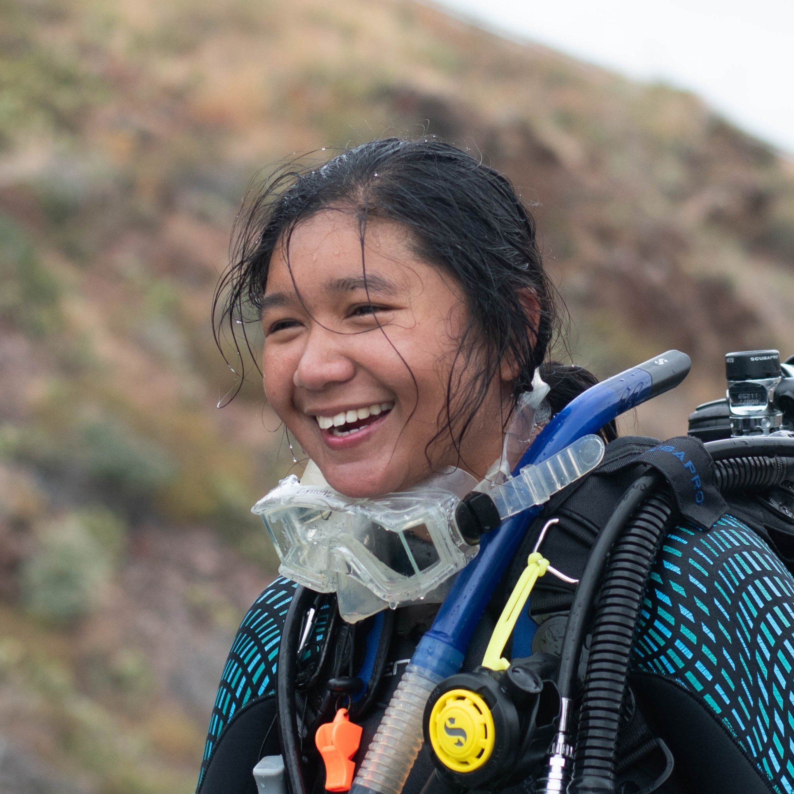

Curiosities and Wonders through the lens of Dr. Mikaela Inessa Chandra

Staring at the sea, it's easy to lose track of time... but it's critical for many sea creatures to keep track of it.
Dr. Chandra studies the biological rhythms and life cycles of brown macroalgae. She completed her PhD in Biology at the University of Southern California, investigating circadian rhythms and senescence in giant kelp, Macrocystis pyrifera. She worked her first postdoctoral position at the Station Biologique de Roscoff in France, elucidating the molecular mechanisms of circadian and circatidal rhythms.

Publications
- Chandra, M. I., Nuzhdin, S. V., Gracey, A. Y. (2026). Differential transcriptomic and circadian regulation in giant kelp (Macrocystis pyrifera) blades based on relative tissue age. Journal of Phycology, 62, 329-346. doi: https://doi.org/10.1111/jpy.70137
- Chandar, M., Harclerode, E., Kim, E., Marsh, J.J.S., Moore, A., Moragne III, W.E., Mukhamedyarova, D. R., Narsinghani, I., Powell, C. J., Pryor, R., Subramani, R., Blazek, G. M., Chandra, M.I., Ramesh, A., Fogerson, S. M., Guerrero-Altamirano, T., Spana, E.P. (2026). The melanized (mel) locus of Drosophila melanogaster is a mutation in CG17065, an N-acetylglucosamine-6-phosphate deacetylase. microPublication Biology. doi: https://doi.org/10.17912/micropub.biology.002178
- Simons, A. L., Aulerich, N., Carlson, H., Chandra, M. I., Chancellor, J., Gemayel, G., Gillett, D. J., Levene, D., Lin, J., Nichol, G., Patel, H., Zhu, S. (2023). Using Zeta Diversity in Describing the Health of Soft Sediment Benthic Macroinvertebrates in the Southern California Bight. Journal of Coastal Research, 39 (3): 418–430. https://doi.org/10.2112/JCOASTRES-D-22-00051
Videos
Blog posts
Follow me on social media!
You can reach me at the following:
- dr.mika.i.chandra@gmail.com
- inessa.chandra@sb-roscoff.fr